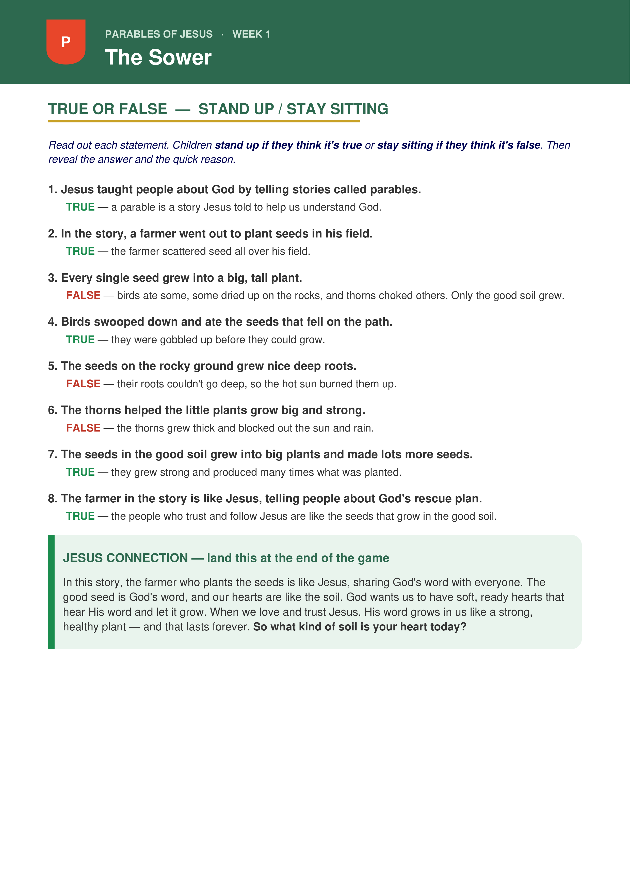
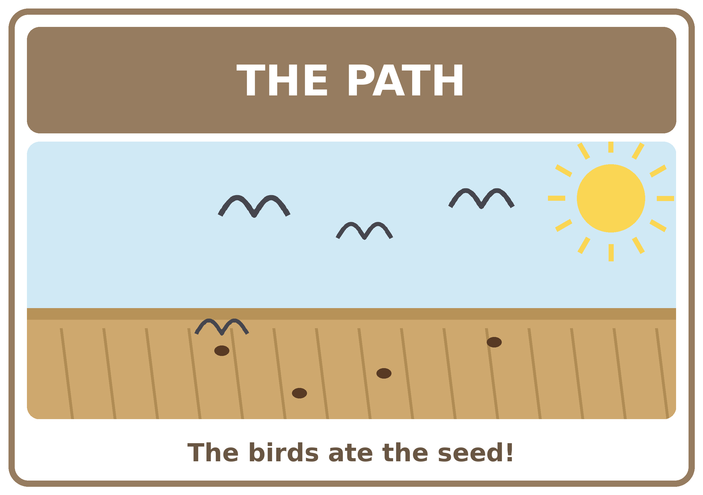
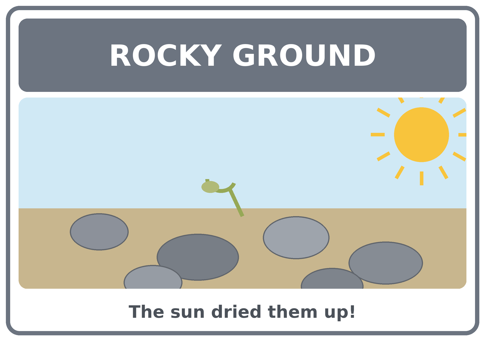
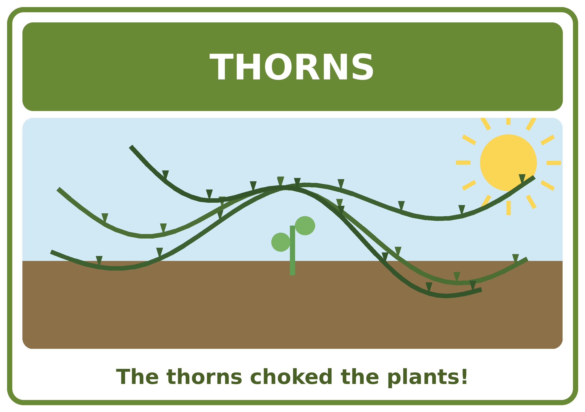
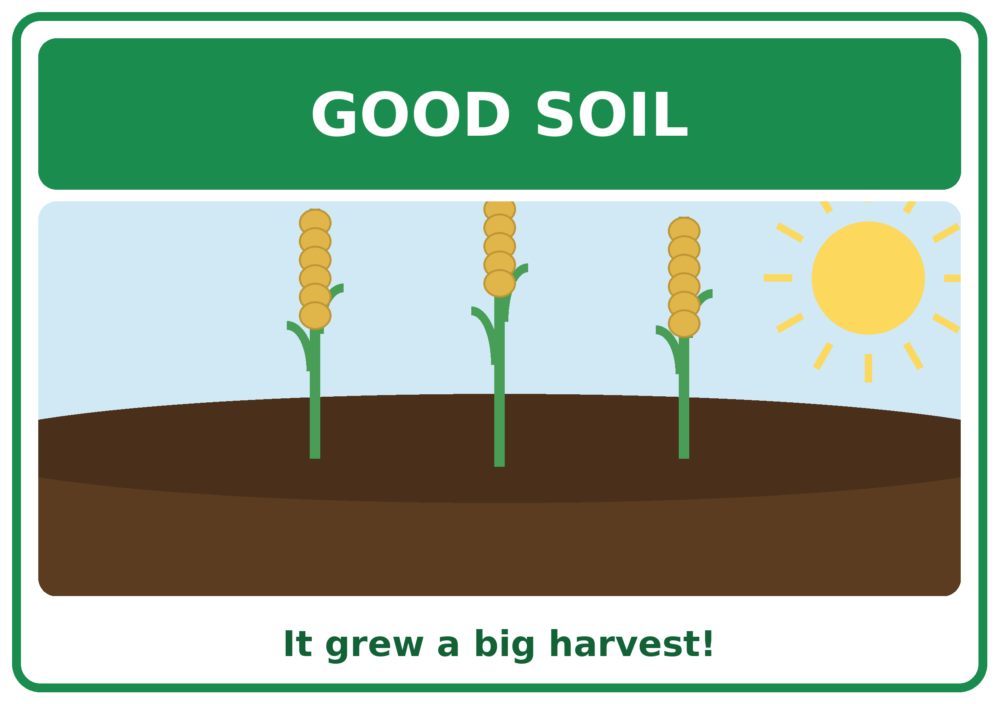
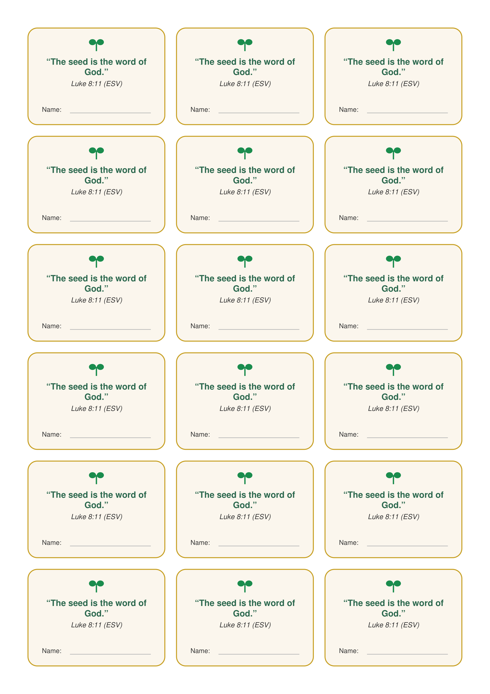
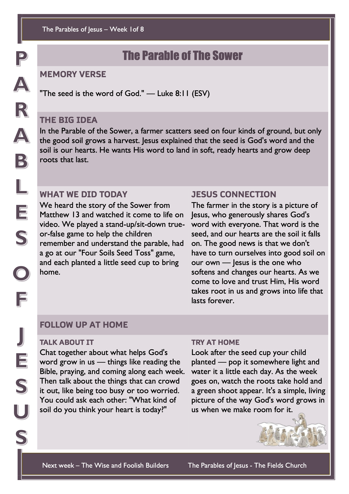

Welcome to a brand new series! For the next eight weeks we’re going to look at the Parables of Jesus. Explain it simply to the children: “A parable is a short, everyday story that Jesus told to teach us something big and true about God. On the outside it’s about ordinary things — farmers, seeds, sheep and families — but on the inside every one of them helps us understand God and points us to Jesus.”
Now get the children thinking about seeds and growing before the story begins. If you can, bring a few real seeds to pass around.
Bible passage: Matthew 13:1–23
Watch the video together, then play the true-or-false recap below.
▶︎ Watch the Bible Story VideoTrue or False – Stand Up / Stay Sitting
Read out a statement about the story: children stand up if they think it’s true and stay sitting if they think it’s false. After each one, reveal the answer and say the quick reason.
Printable leader card — all the statements, answers, and the Jesus Connection to finish on:

Jesus Connection: In this story, the farmer who plants the seeds is like Jesus, sharing God’s word with everyone. The good seed is God’s word, and our hearts are like the soil. God wants us to have soft, ready hearts that hear His word and let it grow. When we love and trust Jesus, His word grows in us like a strong, healthy plant — and that lasts forever. So what kind of soil is your heart today?
🙏 Prayer
Dear God, thank you for giving us your word like good seed. Please make our hearts like good soil — soft to hear you and ready to hold on tight — so your word grows deep roots in us. Thank you for Jesus, who died and rose again so we could have new life. Help us to grow in you. Amen.
This week the game comes straight after the video and true-or-false. A quick, active game that sorts the four soils from Jesus’ story.
Setup
- Mark out four squares on the floor with masking tape.
- Place a picture in the middle of each square so the children can see which soil it is: Path, Rocky Ground, Thorns, and Good Soil.
- Mark a throwing line with tape about 1–2 metres away.
- Gather a pile of “seeds” — beanbags, pom-poms, or scrunched paper balls.
How to Play
- Children take turns tossing a seed and calling out which soil square it lands in.
- Only seeds that land in the Good Soil square score a point — just like in the parable, only the good soil grew a harvest!
- As you play, ask what happens to seed on the path, the rocks, and in the thorns.
- Reset and let everyone have a few turns if time allows.
Soil Square Pictures
Print these on A5 and place one in the middle of each masking-tape square.




Each child plants a real seed to take home and watch grow — a living reminder that God wants His word to grow deep roots in us.
Before the Session
- Set out cotton wool balls (or a little potting soil) and fast-growing seeds — cress, beans, or sunflower work best.
- Have a jug of water and a few spoons ready for scooping soil.
Materials (per child)
- Clear plastic cup or small pot
- Cotton wool balls or a scoop of potting soil
- 2–3 fast-growing seeds (cress, bean, or sunflower)
- A little water
- Sticker or paper strip to write their name and “Luke 8:11”
Steps
- Fill the cup with cotton wool or soil — this is the “good soil”.
- Push 2–3 seeds gently down into it.
- Add a small splash of water (not too much!).
- Stick on the name label with the memory verse: “The seed is the word of God.”
- Send it home with a reminder to keep it in the light, water it a little each day, and watch it grow over the week.
Memory Verse Labels
Print, cut along the borders, and let each child stick one on their pot and write their name. One A4 sheet makes 18 labels.

Print one per child to send home. Preview below — use the button to download the printable sheet.
